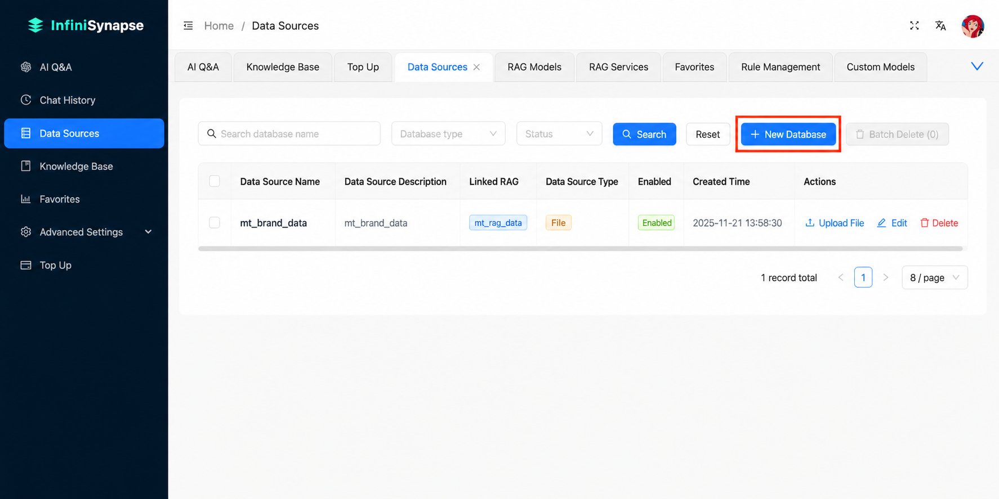
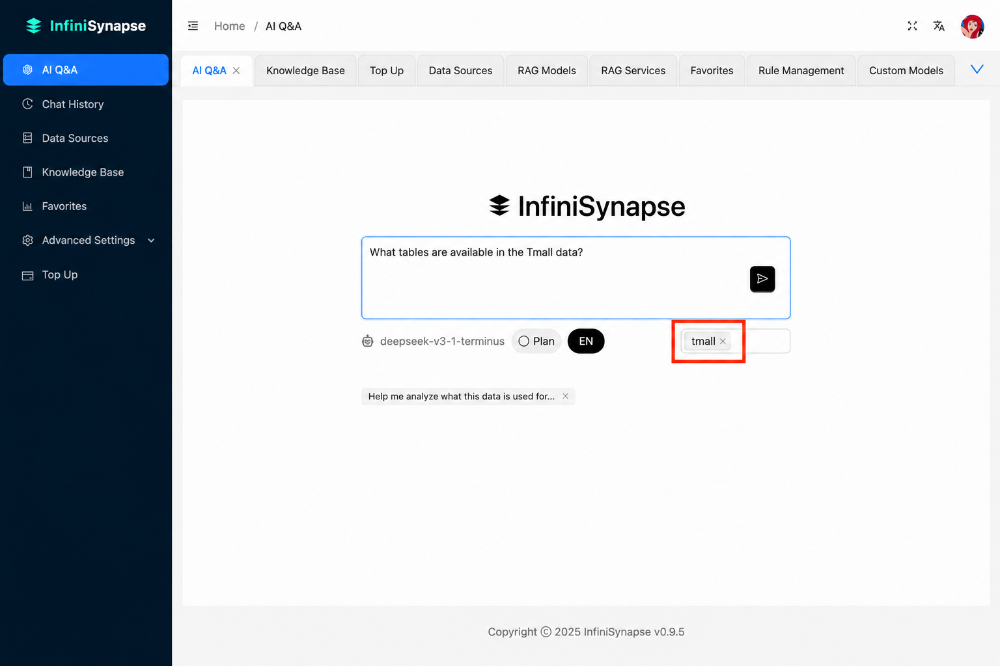
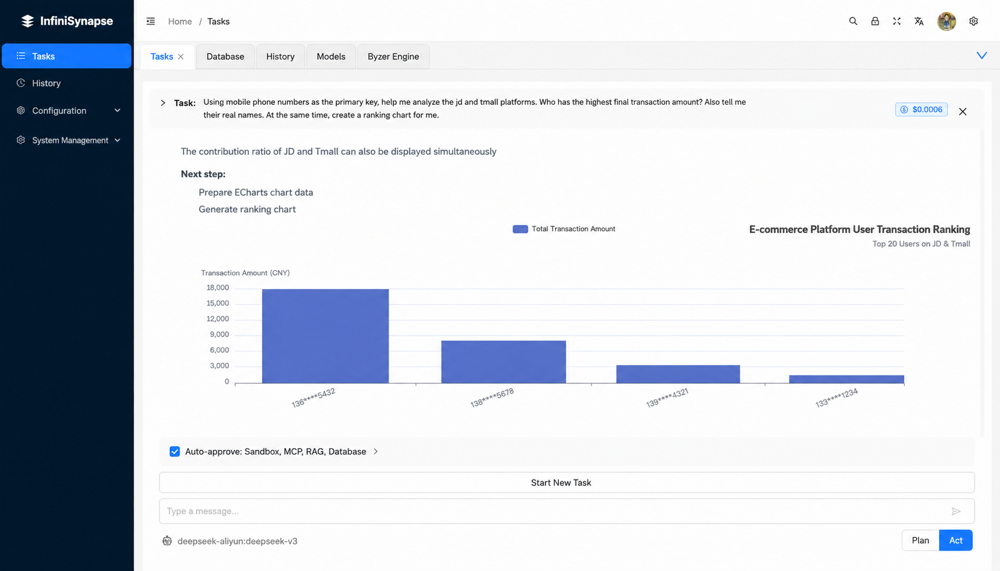

SQL data analysis with AI is a workflow where an AI agent translates plain-English business questions into validated SQL queries, executes them across one or more data sources, and returns both the underlying SQL and the analytical answer. Unlike basic NL2SQL generators, modern AI data analysts also handle schema understanding, multi-table reasoning, cross-source joins, and iterative refinement across turns.
The capability matters because SQL never went away. Every BI dashboard, every operational report, and most data products still resolve to a SQL query somewhere. What changed in 2024-2026 is who writes it. Schema-aware LLM agents now produce SQL that runs against production databases without hand-editing in the majority of cases, freeing analysts and business teams from the part of the job that was never the point.
The shift happened in three waves. Understanding the waves matters because most tools on the market today sit at different points in this evolution, and that determines what they can actually do.
InfiniSynapse sits in Wave 3. The product is built on a fourth-generation LLM-Native RAG architecture and a purpose-built query language called InfiniSQL, optimized for how LLMs actually plan analytical work. The point is not "write SQL for you" — it's "do the analysis for you, and show you the SQL as evidence".
Modern data analysis using SQL looks nothing like the old loop of write-query, run-query, debug-query, format-results. The agent handles each of those phases, and the analyst's role becomes asking better questions and validating answers. Three concrete steps:
The first failure mode of traditional analytics stacks is data movement: pulling data out of a production database into a warehouse, then into a BI tool, before anyone can ask a question. AI data analysts read schemas in place. InfiniSynapse connects directly to dozens of mainstream sources, including PostgreSQL, MySQL, SQL Server, Oracle, Snowflake, Supabase, MongoDB, Redis, and ClickHouse, plus tabular files like Excel and CSV. The schema indexer reads table structures, column names, primary keys, and foreign-key relationships at connection time, so the agent has the context it needs before you ask the first question.

The user types a question the way they would ask a colleague: "show me top customers by revenue last quarter, broken out by region". The agent performs schema linking (matching question terms to actual table and column names), plans a query that may involve joins, aggregations, and window functions, and surfaces the generated SQL for inspection before execution.
This is the part most teams underestimate. The hard problem isn't writing SQL syntax — LLMs solved that two years ago. The hard problem is mapping a business question to the right tables, picking the correct join keys when three tables could plausibly link, knowing whether "last quarter" means the last completed quarter or the trailing 90 days. Schema-aware agents trained on production patterns handle these decisions explicitly, and InfiniSynapse exposes the reasoning so an analyst can override any wrong assumption before the query runs.

Results come back as a table, chart, and short natural-language summary. The agent keeps schema context and prior turns in memory, so follow-up questions like "now segment by acquisition channel" build on the previous analysis without restarting. This is the part that turns analytical work from a single-shot query into a conversation with the data.

Most tools positioned as "AI for SQL" stop at query generation. That covers a real use case — developers and analysts who already know the answer they want and need a syntactic shortcut — but it's only a fraction of what data work looks like. The honest comparison:
| Capability | NL2SQL tools (e.g., AI2SQL, BlazeSQL) | AI data analyst (InfiniSynapse) |
|---|---|---|
| Generates SQL from a question | Yes | Yes |
| Schema indexing for accuracy | Yes (single source) | Yes (multi-source) |
| Executes the query and returns results | Partial | Yes |
| Federates joins across databases | No | Yes |
| Includes unstructured sources (docs, audio, video) | No | Yes |
| Plans multi-step analyses across turns | No | Yes |
| Best fit | Single-shot SQL helper for developers | End-to-end analysis for analysts and business teams |
The right pick depends on what you actually need. If your team is full of engineers who only want SQL syntax suggestions, an NL2SQL generator is lighter and cheaper. If the bottleneck is the whole analysis cycle — schema understanding, joins across sources, interpreting results — a full AI data analyst removes more friction.
One other consideration: longevity of the workflow. NL2SQL tools tend to live alongside an existing analytics stack (warehouse, BI tool, query editor). An AI data analyst tends to replace several layers of that stack, because once an agent can plan, execute, and explain analyses end-to-end, the dashboards and ad-hoc query tools above it become optional. Teams that want incremental adoption usually start with NL2SQL inside their existing tools. Teams that want to compress the stack usually move directly to an AI data analyst.
Performance is where AI-driven analytical tools most often fall apart. Many products demo well on toy datasets and degrade past a few hundred thousand rows. Production workloads routinely involve tens of millions to billions of rows, so this matters.
InfiniSynapse runs validated benchmarks at production scale:
These numbers come from internal benchmarks on customer-shaped workloads; they are not third-party verified. The point is that AI-powered analytical SQL is now genuinely usable at the scale where most enterprise data actually lives, not just on warehouse samples.
The fastest way to evaluate this workflow is to run a question you already know the answer to. Five minutes, three steps:
Authorize a database connection (PostgreSQL, MySQL, Snowflake, MongoDB, SQL Server, Oracle, ClickHouse, Supabase, Redis, and more) or upload a CSV or Excel file. No data migration required; InfiniSynapse reads schema in place.
Type a business question such as "top 10 customers by revenue last quarter" or "compare conversion rate by channel for new users in March". The agent performs schema linking, plans the query, and generates the SQL.
Inspect the generated SQL, view the result set as a table or chart, and read the natural-language summary. Iterate by refining your question; the agent keeps schema and prior context across turns.
Connect a database or upload a file. Ask a question. See the SQL, the result, and the insight in one place.
Try Online Free →Last updated: 2026-05-09
Methodology: Performance figures cited (50M rows in under two hours, 200M sample concurrency) come from InfiniSynapse internal benchmarks on customer-shaped workloads. Industry-wide accuracy ranges for NL2SQL come from published vendor benchmarks and the 2024 Text-to-SQL survey literature.
Conflict of interest: InfiniSynapse is the publisher. Comparisons with other tools reflect their public positioning; we link to vendor sites so readers can verify claims directly.
Update cadence: Reviewed quarterly. Database support, accuracy claims, and benchmark figures refreshed every 90 days.